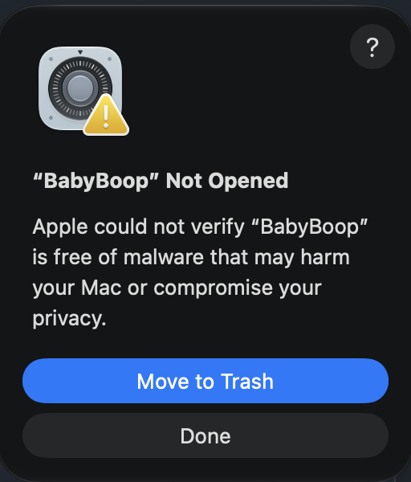
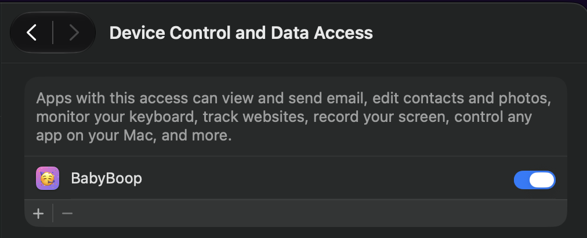

Same key, same friend
Each letter has its own emoji, so toddlers start to learn which key does what. Numbers make stars.
Really locked
⌘Tab, the Windows key, Mission Control, swipes and the Dock are all swallowed while the game runs.
Calm mode
Softer sounds, slower animations and fewer things on screen for wind-down time.
Gentle tones
Each press plays a note. Quiet nursery melodies drift in when the keyboard goes quiet.
Browser or app?
The browser version is the quickest way to see what BabyBoop does. For a toddler at the keyboard, use the app: a browser isn't allowed to block system keys, so one lucky swipe and they're out.
| In the browser | Mac or Windows app | |
|---|---|---|
| Install | None, just open the page | One download, about a minute |
| ⌘Tab / Alt+Tab, Windows key | Leave the game | Blocked |
| ⌘Q, ⌘W, closing the tab | Close the game | Blocked |
| Trackpad swipes, Mission Control, Dock | Work as usual | Blocked |
| Full screen over everything | Esc leaves full screen | Yes, until a grown-up exits |
| How to exit | Anything works | Hold a secret combo (below) |
| Phones, tablets, Linux | Works | Not available |
Setup, step by step
BabyBoop is free and isn't signed with a paid Apple or Microsoft certificate, so your computer warns you the first time you open it. That's expected. Here's exactly what you'll see.
-
Open the download
Open
BabyBoop-macOS.dmgfrom your Downloads folder. A window shows the BabyBoop icon next to an Applications folder. Drag BabyBoop onto Applications. -
Open BabyBoop and get past the warning
Open BabyBoop from Applications. macOS stops it with
"BabyBoop" Not Opened
. Click Done, not Move to Trash.
What you'll see the first time. Click Done. Now open System Settings → Privacy & Security and scroll to the bottom. Next to
"BabyBoop" was blocked to protect your Mac
, click Open Anyway. Confirm with your password or Touch ID, then click Open Anyway once more. You only do this once. On recent macOS, right-click → Open no longer skips this step.Why does macOS say this?
- It means "not checked by Apple", not "something bad was found". macOS shows this for any app whose developer hasn't joined Apple's paid developer program and sent the build to Apple for scanning. BabyBoop is a free hobby project, so it hasn't been.
- You can read every line. BabyBoop is open source. The game is one HTML file and the Mac app is about 250 lines of Swift, all on GitHub.
- Built in public, not on someone's laptop. Each release is built by GitHub from that public code, and the build logs are public too.
- Nothing leaves your Mac. BabyBoop has no network code at all. No account, no analytics, no ads.
-
Let BabyBoop watch the keyboard
BabyBoop asks for one permission. Click Open System Settings and switch BabyBoop on. The list is called Accessibility, or Device Control and Data Access on macOS 27 and later. BabyBoop notices within a second.

macOS 27 calls this list Device Control and Data Access. Why does it need this?
macOS's description lists everything an app with this access could do. BabyBoop uses it for one thing: catching keys and swipes while the game is running, so ⌘Tab, ⌘Q or a trackpad swipe can't take your toddler somewhere else. When you exit, it stops listening.
-
Press Start
The screen fills, the Dock and menu bar hide, and the keyboard belongs to your toddler.
After an update: macOS forgets the permission. In System Settings → Privacy & Security → Accessibility (Device Control and Data Access on macOS 27), select BabyBoop and click −, then click + and add it again.
-
Run the download
Open
BabyBoop-Windows-x64.exe(or-arm64.exe) from your Downloads folder. There's nothing to install. It runs straight away. -
Get past SmartScreen
A blue box says
Windows protected your PC
. Click More info, then Run anyway. You only do this once per download.Why does Windows say this?
SmartScreen warns about any app that isn't signed with a paid certificate and hasn't been downloaded by many people yet. It doesn't mean anything was found. BabyBoop is open source, each release is built by GitHub from the public code, and it has no network code of its own.
-
Press Start
The screen fills and the keyboard belongs to your toddler.
Early days on Windows: the Windows app builds and passes its automated tests, but hasn't been tried on real PCs yet. If a key or gesture gets past the lock, tell us.
Good to know: Ctrl+Alt+Del and Win+L always work, because Windows doesn't let any app block them. BabyBoop needs the Microsoft Edge WebView2 Runtime, which comes with Windows 11 and up-to-date Windows 10. If it's missing, BabyBoop tells you where to get it.
Getting out again
Toddlers mash keys; they don't hold three of them steady. So exiting takes a long, deliberate hold. A ring fills up on screen while you hold.
Hold for 2 seconds. On Windows, use Alt instead of Option.
Hold for 5 seconds. Same on Mac and Windows.
Downloads
Tested by hand: v0.1.0 on macOS 27 (Apple silicon). Windows builds pass automated tests but haven't been tried on a real PC yet.
Older versions and release notes are on the Releases page.
Open source
BabyBoop is MIT licensed and built in the open. The game is one HTML file. The Mac app is a small Swift wrapper and the Windows app a small .NET one. Read the code, build it yourself, or help make it better.